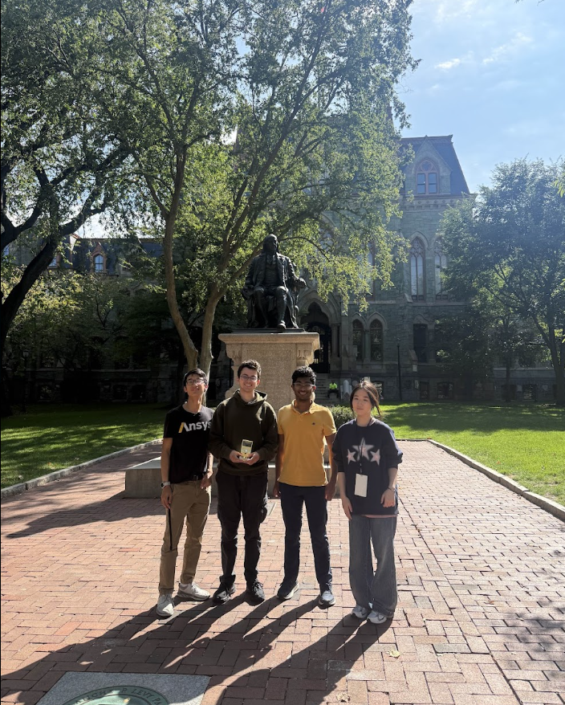
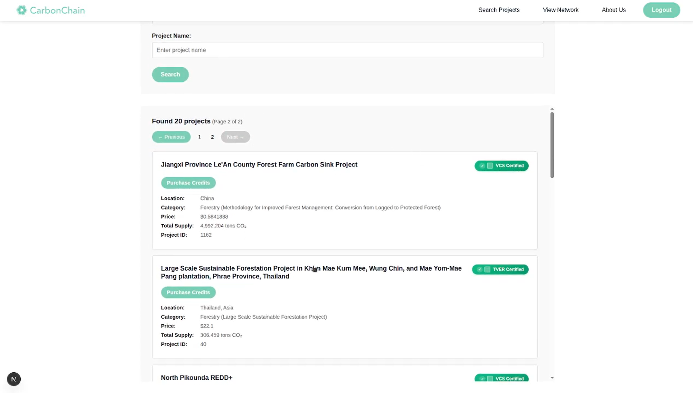
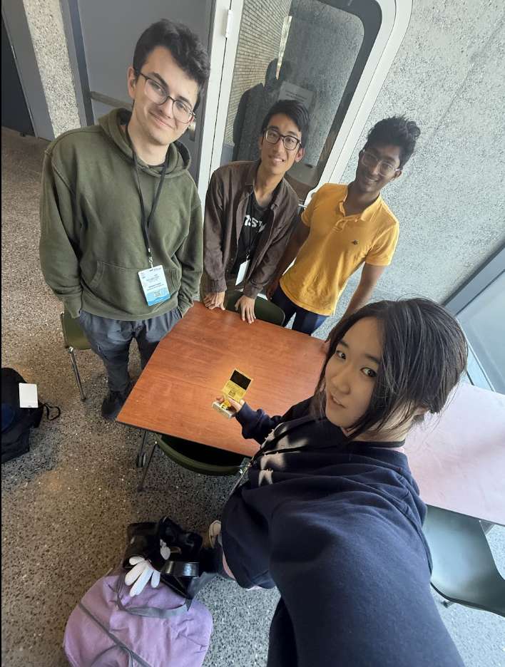

Competition Overview
- Placement: 1st of 85 teams in Bloomberg Sustainability track.
Project Links
Technologies Used
- Next.js
- React
- Auth0
- FastAPI
- Web3.py
- MongoDB Atlas
Details
CarbonChain was built around a simple problem: consumer-facing carbon offset programs often hide where money goes, making it hard to trust that purchases are actually funding meaningful climate impact. That creates room for double crediting, greenwashing, and bureaucratic friction for cities, companies, and individuals trying to support real projects.
We approached that as an operating system for sustainable development powered by blockchain. Buyers can pick a carbon project directly, while the platform mints proof-of-impact certificates that are immutable and transparent. The MVP runs on a testnet demo, which keeps the system safe for experimentation while still demonstrating how milestone-based smart contracts, verifiable project data, and public transaction history can improve trust, traceability, and adoption.


